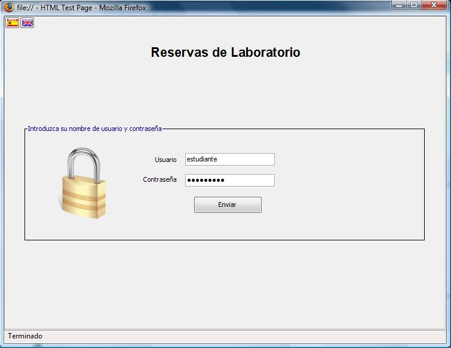
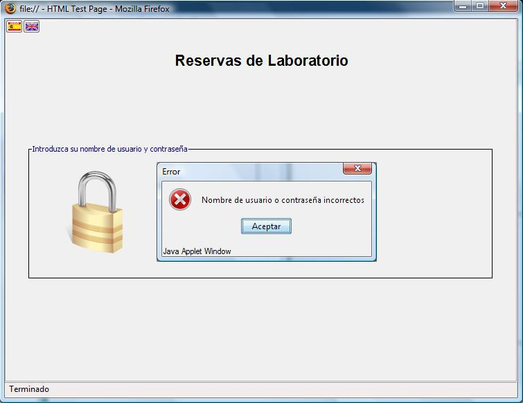
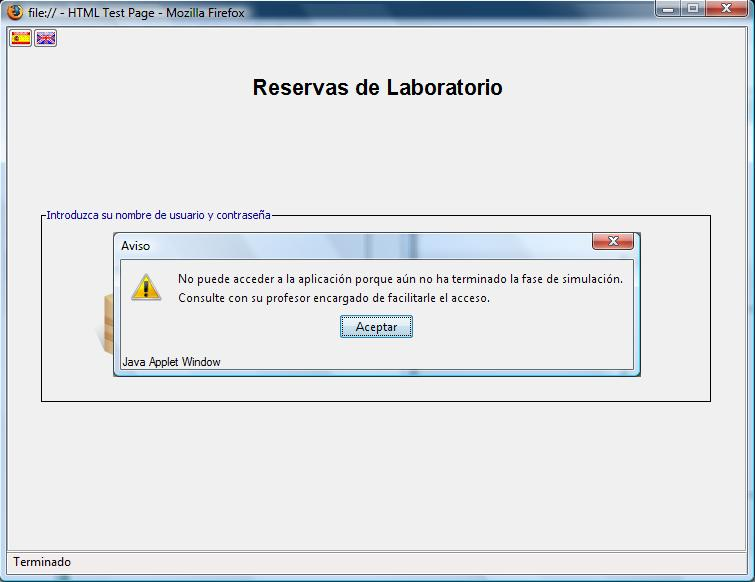
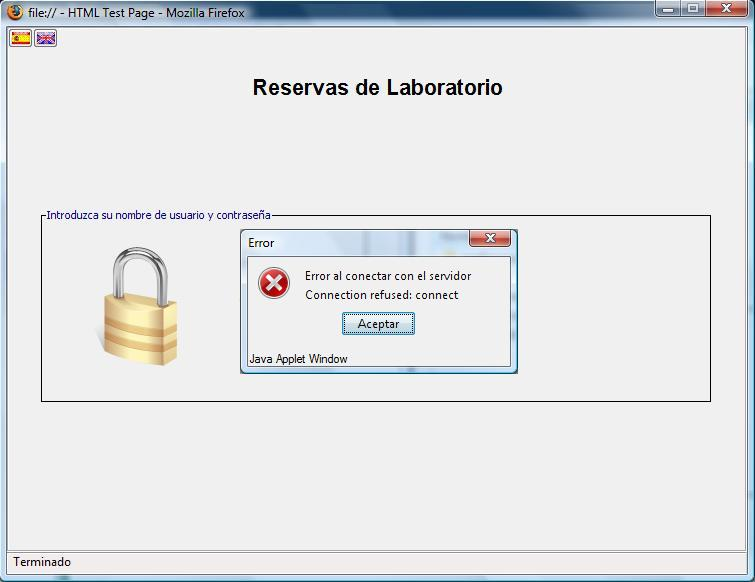

Reservas de Laboratorio
Acceso a la aplicación
Para acceder a la Aplicación de Reservas introduzca el nombre de usuario y la contraseña que le han sido facilitados.

Si los datos que ha tecleado son correctos tendrá acceso a la pantalla de reservas. Ir a Cómo realizar una reserva
Si ha introducido sus datos erróneamente le aparecerá el siguiente aviso

Si aún no ha terminado la fase de simulación recibirá la advertencia que se muestra en la siguiente imagen. Consulte con su profesor si cree que ya debería poder acceder a la aplicación.

Si el navegador no puede conectar con el servidor recibirá un aviso. Es posible que el servidor de reservas no se encuentre disponible en ese momento, por favor, pruebe a conectar más tarde o si el problema persiste póngase en contacto con el administrador o con su profesor.
